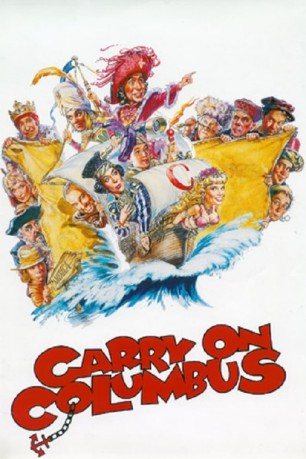
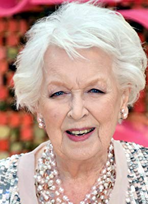

#11803 Carry On 30 - Mach's nochmal, Columbus
Alternativ: Carry on Columbus (Englischer Titel)
 
 IMDB-Wertung: 3.2 / 10
IMDB-Wertung: 3.2 / 10  Metascore: 0
Metascore: 0 
Jetzt wissen wir, wie es zur Entdeckung Amerikas kam: Columbus hatte keine Ahnung, wo es lang geht! Allerdings konnte seine Crew sowieso nicht navigieren und war meist volltrunken. Endlich mal wieder ein respektloser Film mit britischem Humor. Der Sultan der Türkei schickt dem Kartenmacher Columbus, der von einem neuen Schiffweg nach Indien träumt, zwei Spione auf den Hals. Der spanische König finanziert Columbus' ambitionierte Reise. Durch eine falsch aus dem Hebräischen übersetzte Karte kommt der Schiffsmann allerdings vom Kurs ab und landet nach einer turbulenten Seereise, auf der er sich in die Spionin Fatima verliebt, in Amerika, wo er auf Indianer trifft, die alles andere als unzivilisiert sind. Nach einer erfolglosen Exkursion in eine Goldmine erhält Columbus das erhoffte Gold erst, als er bereit ist, gegen Waffen zu tauschen. Leider ist das Gold gefälscht, doch mit einem Trick rettet sich Columbus auch aus dieser Bredouille.
Jahr: 1992
Dauer: 84 Minuten
FSK: 12
Land: England Studio: Delta FilmverleihTonspuren:
Untertitel:
Auflösung: SD (450x360) Größe: 266 MB
Genre: Action, Komödie, Abenteuer, Liebe
Regisseur: Gerald Thomas
Drehbuch: John Antrobus, Dave Freeman
Soundtrack: John Du Prez
Darsteller:
 Jim Dale als Christopher Columbus
Jim Dale als Christopher Columbus Bernard Cribbins als Mordecai Mendoza
Bernard Cribbins als Mordecai Mendoza- Maureen Lipman als Countess Esmeralda
- Alexei Sayle als Achmed
 Rik Mayall als The Sultan
Rik Mayall als The Sultan Charles Fleischer als Pontiac
Charles Fleischer als Pontiac Larry Miller als The Chief
Larry Miller als The Chief- Nigel Planer als The Wazir
 Leslie Phillips als King Ferdinand
Leslie Phillips als King Ferdinand-  June Whitfield als Queen Isabella of Castille
- Julian Clary als Don Juan Diego
- Sara Crowe als Fatima
- Holly Aird als Maria
 Keith Allen als Pepi the Poisoner
Keith Allen als Pepi the Poisoner Martin Clunes als Martin
Martin Clunes als Martin Allan Corduner als Sam
Allan Corduner als Sam James Faulkner als Torquemada
James Faulkner als Torquemada Don Henderson als The Bosun
Don Henderson als The Bosun Burt Kwouk als Wang
Burt Kwouk als Wang- Rebecca Lacey als Chiquita
- Chris Langham als Hubba
- Daniel Peacock als Tonto the Torch
- Jon Pertwee als Duke of Costa Brava
- Tony Slattery als Baba the Messenger
- Richard Wilson als Don Juan Felipe
- Duncan Duff als Inquisitor #2
- Jonathan Tafler als Inquisitor #3
- Michael Hobbs als Inquisitor #6
- Nej Adamson als Fayid
 Selva Rasalingam als Abdullah
Selva Rasalingam als Abdullah Peter Gilmore als Governor of the Canaries
Peter Gilmore als Governor of the Canaries Peter Pedrero als Native Warrior Guard (uncredited)
Peter Pedrero als Native Warrior Guard (uncredited)- Lorraine Sass als Girl in Spanish Court (uncredited)
- Peter Richardson als Bart Columbus
- Jack Douglas als Marco the Cereal Killer
- Peter Gordeno als The Shaman
- Andrew Bailey als Genghis
- Philip Herbert als Ginger
- David Boyce als Customer with Ear
 Sara Stockbridge als Nina the Model
Sara Stockbridge als Nina the Model- Dave Freeman als Inquisitor #1
- James Pertwee als Inquisitor #4
- Toby Dale als Inquisitor #5
- Don Maclean als Inquisitor with Ham Sandwiches
- Su Douglas als Countess Joanna
- John Antrobus als Manservant
- Lynda Baron als Meg
- Mark Arden als Mark
- Harold Berens als Cecil the Torturer
- Marc Sinden als Captain Perez
Datei: X:\7+mehr(A-Z)\Carry On\Carry On 30 - Mach's nochmal, Columbus (1992, FSK12, 450x360).mp4 seit 20.09.2019
Festplatte: HD Collection-7+mehr(A-Z)+Person
 Es gibt insgesamt 33 Filme in der Gruppe '7+mehr(A-Z)\Carry On'
Es gibt insgesamt 33 Filme in der Gruppe '7+mehr(A-Z)\Carry On'